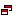

В оглавление
Для установки системы IP Studio AMBS ваш веб-сервер должен удовлетворять следующим требованиям:
Вариант рекомендуемого сервера: • CPU 2x Xeon 3000 • RAM 4Gb • 2х SCSI 70 GB Raid 0,1 (или SAS)
Из расчета нагрузки 200–400 одновременных вызовов.
ОС и обязательные ПО: • Операционная система RedHat Enterprise release 4 (и выше), CentOS 5.2 Final (и выше), Fedora Core 11 (и выше) • Обязательное наличие установленных пакетов: GCC (Linux Development Pack) и SendMail. • Только 32-разрядные ОС
Обязательные настройки: • Сервер должен иметь внешний ip-адрес (белый адрес). • На виртуальных машинах AMBS не работает.
• Система “IP Studio AMBS” распространяется в виде бинарного дистрибутива. При желании, следуя инструкции по установке можно успешно провести процесс установки на сервер самостоятельно.
• Процесс установки системы проходит в терминальном режиме сервера.
• Перед тем, как приступить к процессу установки системы, нужно отправить в службу технической поддержки IP Studio письмо со всеми необходимыми данными(описаны ниже). На основании информации из письма, будут подготовлены ключи демонстрационной версии АМБС и отправлены с ответным письмом вместе с ссылкой для загрузки АМБС на сервер.
• Если планируется подключать к AMBS удаленные MVTS-сервера, они должны также работать под аналогичной ОС Linux. BSD-системы не поддерживаются.
Перед началом установки нужно отправить письмо в отдел технической поддержки IP Studio, чтобы вам открыли доступ для установки и обновления AMBS и подготовили демонстрационные ключи Письмо должно содержать следующую информацию:
1. Название вашей компании и контакты сотрудника компании, который будет заниматься AMBS (icq, email). 2. Внешний IP-адрес сервера, куда будет устанавливаться система “IP Studio AMBS”. Необходима для создания лицензии/ключа АМБС. 3. Предпочитаемый вариант установки “IP Studio AMBS” на сервер: вашими инженерами или нашими. 4. Ключ сервера куда будет устанавливаться AMBS, чтобы он имел доступ к нашему серверу обновлений.
После получения ответа о регистрации сервера можно копировать дистрибутив AMBS на сервер и приступать к процессу установки.